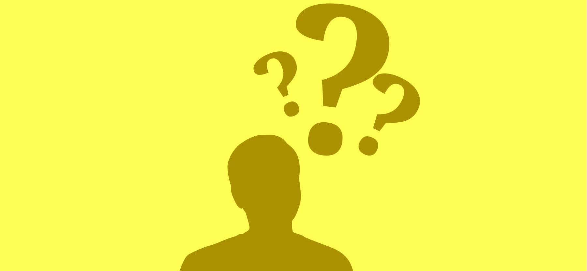

bridge
Kort om
Bridge er et kortspill for fire spillere, hvor det er to lag. Alle kortene i kortstokken deles ut, slik at hver spiller har 13 kort.
Regler
Ingen jokere blir brukt. I sin enkleste form er Bridge veldig likt kortspillene Amerikaner og Whist. Det er to faser i spillet, en meldedel (auksjonen) og selve spilledelen. Under auksjonen skal spillerene bestemme hvem som spiller kontrakten, hvor mange stikk hvert lag skal ta og hva som skal være trumf. Når et spill er ferdig regnes det ut en poengsum, som baserer seg på kontrakten og om kontrakten ble vunnet eller ikke.
Les mer
Det finnes to hovedspillformer for Bridge, det er duplikatbridge og robberbridge.
Les mer om Bridge: http://no.wikipedia.org/wiki/Bridge

Vis Oslo Bridge senter i et større kart
